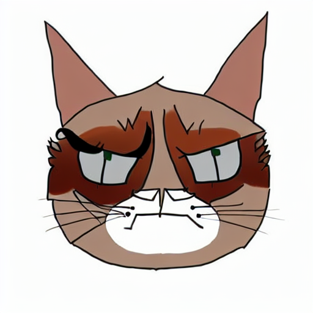

Project 5
Cats Photo Editing
Author: Keling Yao
Andrew ID: kennyy
Overview
In this project, there are three parts.
- Part 1: Inverting the Generator: Reconstruct the image from a given latent code.
- Part 2: Sketch to Image: Generate a photo from a given sketch.
- Part 3: Stable Diffusion: implement SDEdit to edit a given photo with a text prompt using DDPM.
Part 1: Inverting the Generator [30 points]
(1) Combinations of the losses
In part 1, my loss function is a weighted sum of L1, L2, and perceptual losses. All following results are produced after 1000 iterations, with stylegan in w+ space. I tune the weights for a best configuration.
Original data
Loss Comparison (Varying Perceptual Loss Weight)
| Perceptual loss weight | L1 Loss (L1=10, L2=0) | L2 Loss (L1=0, L2=10) |
|---|---|---|
| 0.001 | ||
| 0.01 |  |
|
| 0.1 | ||
| 1.0 |
Observation:
Based on these experiments, I found that using a small perceptual loss weight (0.1) with L2 loss weight of 10 and no L1 loss produced the best results. This combination can recover the cat with more details such as the fur texture, the eyes, and the facial features. It is also noticeable that the purple background on the left up corner is more vivid.(2) Different generative models
Using the perceptual loss weight of 0.001 and L2 loss weight of 10 and 1000 iterations, I compared the reconstruction quality between vanilla GAN and StyleGAN in z space.
| Model | Result |
|---|---|
| Original data | |
| Vanilla GAN | |
| StyleGAN |
Observation:
StyleGAN result is much better than vanilla GAN. The StyleGAN result preserves more details in the cat's fur texture and facial features, while the vanilla GAN result appears more blurry and loses some fine details.(3) Different latent space
Using StyleGAN model with the perceptual loss weight of 0.001 and L2 loss weight of 10 and 1000 iterations, I compared reconstructions in different latent spaces (z, w, and w+).
| Latent Space | Result |
|---|---|
| Original data | |
| z space | |
| w space | |
| w+ space |
Observation:
The w+ and w space results are slightly better than the z space result. The w+ space reconstruction shows the most accurate color reproduction, particularly in the fur color. It also preserves sharper features in the cat's face, especially around the eyes and mouth. The w space result is similar but slightly less detailed, while the z space result appears more blurry and loses some of the fine details.Run time:
All the experiments are 1000 iterations and take ~30 seconds to run on a Nvidia A6000 GPU.Part 2: Sketch to Image [40 points]
In this part, I used StyleGAN's w+ space with the parameters (perceptual loss weight = 0.001, L2 loss weight = 10, iterations = 1000) to generate realistic cat images from hand-drawn sketches. This is achieved by optimizing a random noise image to match the sketch in masked regions while maintaining the natural image manifold of the generator.
| Sketch | Mask | Result |
|---|---|---|
 |
||
 |
||
 |
||
Observation:
- The color that are not common in the cat like grey are not generated well.
- Sparse masks produced more varied results as less pixels are constrained.
- Adding more details in the sketch also contributes to more realistic details, especially in the cat's eyes and facial features.
- Higher contrast in the sketch also produces results with sharper features.
- Under W+ space, the results from similar sketches tend to converge to similar cat images.
Part 3: Stable Diffusion [30 points]
I implemented the SDEdit approach by incorporating an input image along with a text prompt to guide the diffusion DDPM process.
(1) Parameter Study
I conducted a parameter study on classifier-free guidance strength and timestep to understand how different timesteps and guidance strengths affect the output quality:
Original Image
Prompt: "Grumpy cat reimagined as a royal painting"
| Timestep | ||||
|---|---|---|---|---|
| 500 | 600 | 700 | ||
| Guidance Strength |
15 |

|
||
| 25 | ||||
| 35 |  | |||
Another example
Original Image
Prompt: "A cute panda sitting peacefully in a lush bamboo forest, holding and eating a thick stalk of bamboo with its paws, realistic lighting and fur texture, high detail, natural environment"
| Timestep | ||||
|---|---|---|---|---|
| 500 | 600 | 700 | ||
| Guidance Strength |
15 | |||
| 25 | ||||
| 35 | ||||
(2) Different amounts of noise added to the input
I conducted a parameter study on the amount of noise added to the input to understand how different amounts of noise affect the output quality:
noise std = 0.5
noise std = 1
noise std = 2
Observation:
Bells and Whistles
(1) Interpolate between 2 latent codes
Below is the interpolation between the 0th and 1st data and the 2nd and 3rd data in cat dataset.